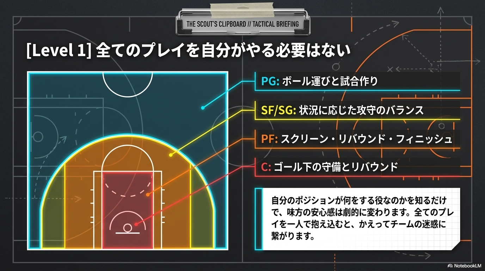
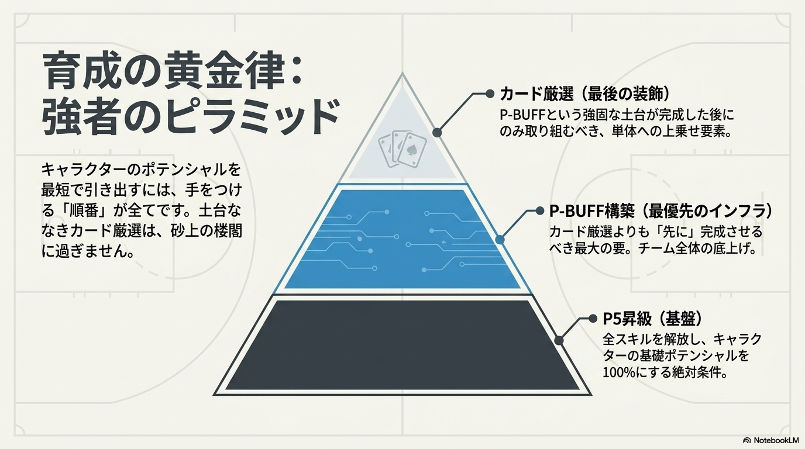
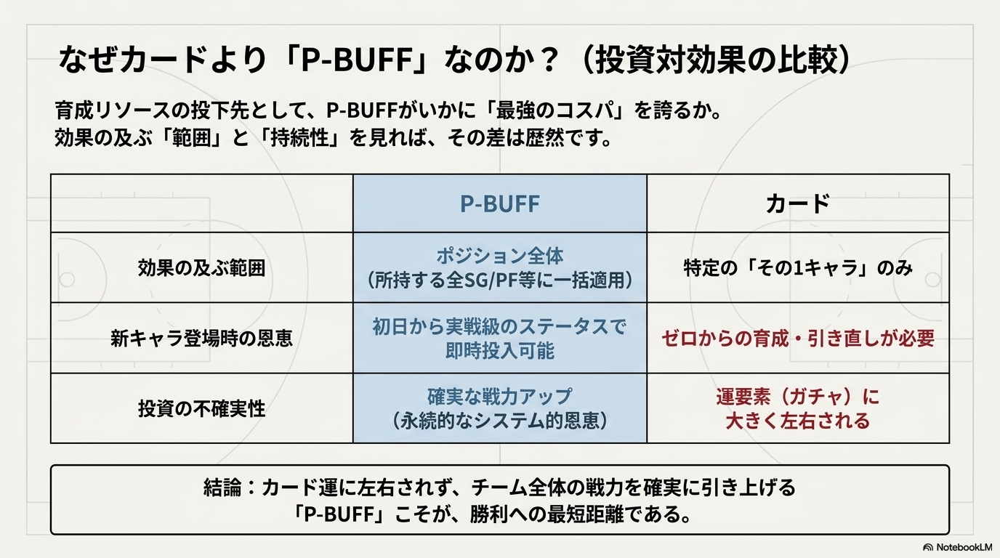
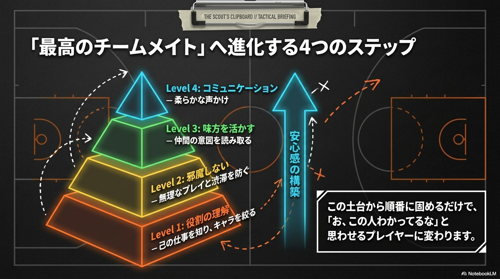
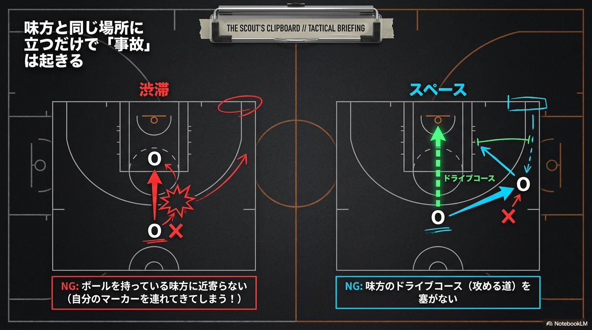
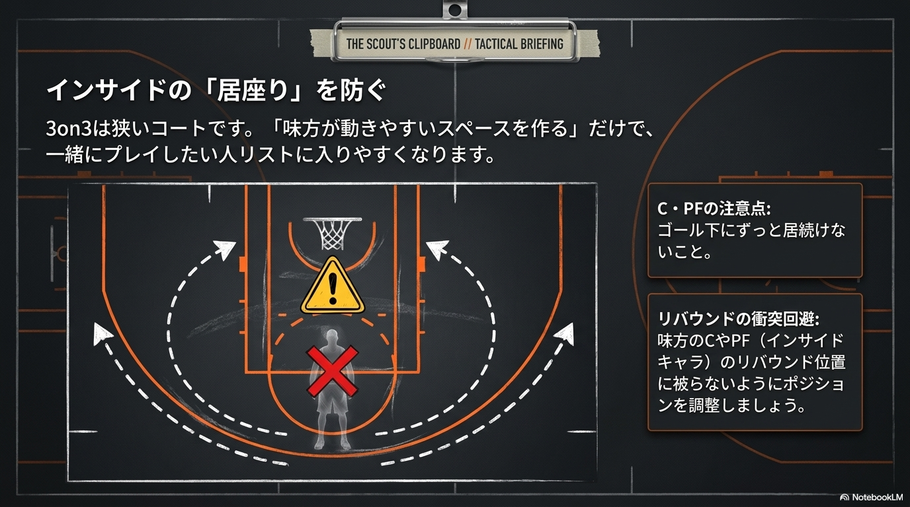
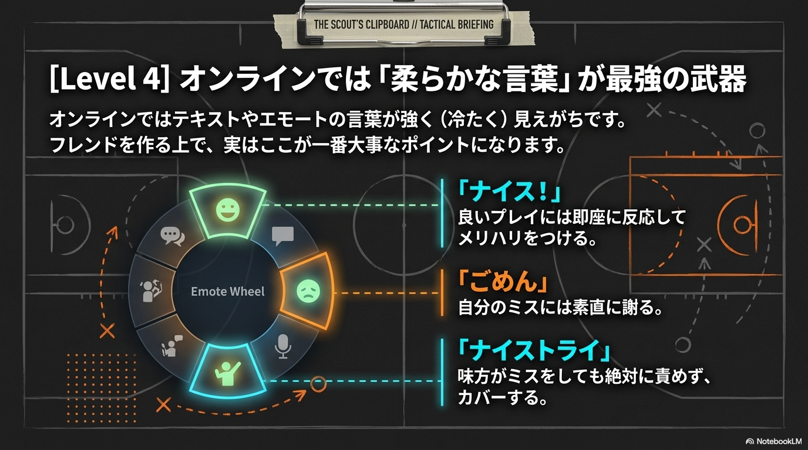

結論から学べるフリスタ攻略ロビー。ポジションの役割、おすすめキャラ、育成の黄金順、そして「最高のチームメイト」への進化までを4ステップで案内します。
単独で試合をなんとかできる別格の存在。どのポジションから始める人にも真っ先に挙げたい目標キャラです。
守備の要。堅い守備とルーズボール回収で試合の流れを作るPGです。
役割→おすすめキャラ→育成→チームプレイ。迷ったらこの順で進めばOK、4ステップの攻略ルート。
全61キャラの紹介と関係性。誰を育てるか、誰と組むかはここで決める。
共通66／固有106、全172件。効果説明と所持者つきで検索・絞り込みできる。
全キャラの能力値を一覧・比較できるデータベース。育成先の見極めに。
同ポジション全員に効く永続強化。育成の黄金順で、上級者の必須チェック項目。
NGプレイ改善、野良戦術、Pバフ解説まで。ガイドの「続き」は全19記事こちら。
司令塔PG／スコアラーSG／バランサーSF／支柱BIG。それぞれの役割と立ち回りの基本を押さえます。
別枠のバスキーと、ポジション別の候補5人。極めるポジションと目標キャラを早めに決めます。
P5昇級で基盤を作り、Pバフをカードより先に完成させる。迷わない育成の黄金順と日課を紹介します。
役割を果たす→邪魔をしない→意図を読む→コミュニケーション。4つのレベルでチームプレイを磨きます。
2016年頃からこのコートを見守ってきました。一度引退しましたが、2024年に戻ってきました。
攻略ガイド等を公開中。コミュニティを盛り上げましょう！
外部リンク：note（SRT）／YouTube／公式サイト／プレゼントMAP
このサイトは「3on3 FreeStyle」の非公式ファンサイトです。公式情報は公式サイトをご確認ください。
アジア・日本圏 サーバーPing可視化マップ
日本国内からは一貫して低いPing（遅延）で接続可能です。
キャラクターカードをクリックすると解説・紹介動画が再生されます！
上位リーグ（High Tier）で勝つために必要なのは、テクニックの前に「順番」です。①役割を知る → ②育てるキャラを決める → ③正しい順序で育成する → ④チームで勝つ立ち回りを覚える。このガイドは、note連載の要点を4ステップに凝縮したものです。詳しい解説は各ステップ末尾のnote記事で読めます。
結論：全てのプレイを1人でやろうとしないこと。自分のポジションの「仕事」を理解しているだけで、味方の安心感も勝率も変わります。
ボール運びと試合作りが仕事。味方を活かす展開力に加え、守備で流れを変える力も求められます。最初に触るとゲーム理解が一気に深まるポジションです。
チームの得点源。フリーで打てる位置取りと、味方にフリーを作ってもらう動きの両方が大事です。シューターがいるかどうかで攻撃の形そのものが変わります。
攻守のバランス役。状況に応じて得点役にも守備役にも回れる柔軟さが武器で、チームの穴を埋める存在です。
PFはスクリーン・リバウンド・フィニッシュ、Cはゴール下の守備とリバウンドが仕事。ただしゴール下に居座り続けるのはNGです（STEP 4で解説）。

結論：極めるポジションを1つ決め、目標キャラを早めに定めること。初期キャラの中で現環境でも即戦力になるのはマードック（PF）くらいで、それ以外は環境キャラへの移行が前提になります。
現在の最強はこの1人。単独で試合をなんとかできる別格の存在なので、ポジション別の候補とは分けて「別枠」で推奨します。どのポジションから始める人にも真っ先に挙げたい目標キャラです。
ポジション別の候補（単独で打開できるタイプ）
守備の要。堅い守備とルーズボール回収で試合の流れを作るPGです。
最強クラスのスコアラー。フェイクと読み合いで得点を量産します。
接戦に強いエース。1人で局面を打開できる打開力が持ち味です。
圧倒的な身体能力でゴール下を支配するパワーフォワードです。
広いシュートレンジとゴール下プレイを両立する万能型センターです。
2026年環境のPGはカジ／ジェネーザ／クララ／アイラの4強。中でもクララはルーズボールへの対応力と、ジャンプシューターを封じる守備が持ち味で、攻守バランスも高く育成優先度が高い1人です。まずは初期のマードックで基礎を覚えながら、自分のポジションの目標キャラを狙いましょう。
結論：育成の黄金順は「P5昇級 → Pバフ構築 → カード厳選」。カードパックに資源を注ぐのは最後です。理由はシンプルで、カードは装備した1キャラだけの強化ですが、Pバフは同ポジションの全キャラに効く永続強化だからです。
育てるポジションは1つに絞り、メインキャラとPバフ要員を育成します。★4でPバフ1枠目、★5（P5）で2枠目が解放されるので、超越黒本を集めてP5化するのが全ての土台です。
同じバフを2枠に重ねがけでき、効果は同ポジション全員へ常時適用されます（例：移動速度アップを2枠で合計+28）。まず移動速度を確保することが、上位のスピードに対抗する前提条件です。
Pバフの土台が完成して初めて、能力カードの厳選に着手します。順番を逆にすると、新キャラを手に入れるたびに引き直しが必要になり、投資が無駄になります。


結論：上手さより先に「一緒にやりやすい人」になること。役割を果たし、邪魔をせず、意図を読み、丁寧に声を掛ける。この4段階が、そのまま勝率に直結します。

まずは自分のポジションの仕事に集中すること（STEP 1）。全部を自分でやろうとせず、任せるべき場面は味方に任せるのも役割のうちです。
味方と同じ場所に立たない。ドライブコースを塞がない。ボール保持者に近寄らない（自分のマーカーを連れてきてしまいます）。そしてセンターはゴール下に居座らないこと。居座ると相手センターをゴール下に固定し、味方の攻撃ルートに壁を作ってしまいます。
味方がドライブしたらスペースを空け、スクリーンには動きを合わせ、シュートが外れたらリバウンドへ。野良の基本形はアイソレーションです。シューターにボールを預け、残り2人は大きく広がって邪魔をしないこと。攻撃の起点は窮屈なサイドではなく、中央（トップ）から作ります。
味方のミスには責めずに「大丈夫」。自分がミスしたら謝る。「パス」の連打のような圧のある要求は控えめに。丁寧なやり取りができる人ほど、フレンドに誘われ、固定チームへと繋がっていきます。



技術や運に頼る前に、この4点を毎試合問い直すのが「脱・戦犯」への近道です。